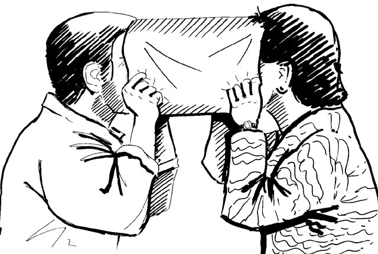
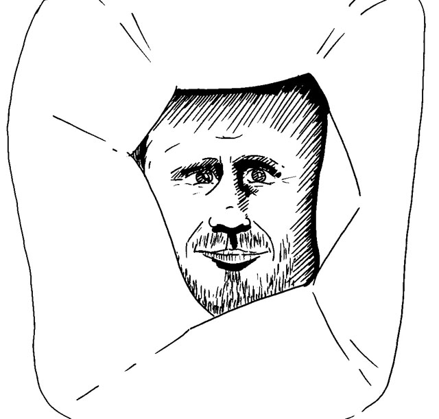

This experiment looks into your fundamental relationship with others. Are you face to face with others and therefore distant and separate from them? Or are you face there to no face here and therefore not separate or distant? Do you confront others or are you capacity for them?
The Tube experiment is a powerful exploration of this important question. If you don’t have a tube you can either make one (it’s easy to do) or you can do the experiment without one – simply sit opposite a friend and look at each other, changing the questions slightly to fit this situation. You can also do this experiment looking at your face in the mirror – with or without a tube.
To make a tube, cut the end off a paper bag or get a large piece of paper and tape the ends together – it must be large enough to fit a face in each end. Sit opposite a friend. One of you can read the questions out loud – briefly come out of the tube to do so. Or better, get a third person to read the questions to you.
 Put your face in one end of the tube whilst your friend puts his or her face in the other end. Answer (silently to yourself or out loud to your partner) the following questions:
Come out of the tube.
Take a few moments to share your reactions with your friend.